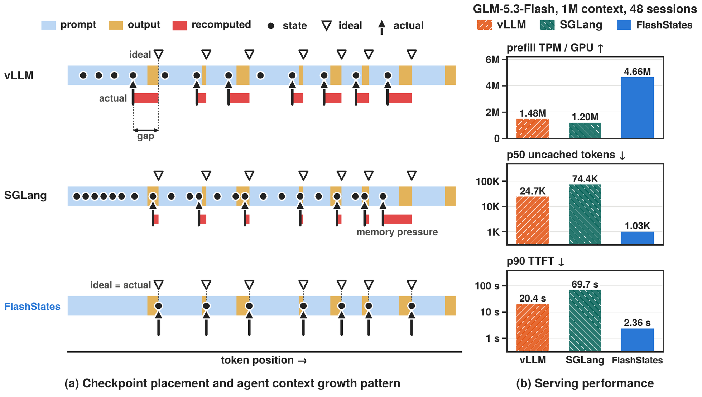

FlashState: Unlocking Flexible Hybrid State Management for Agentic LLM Serving

Hybrid LLMs need matching attention KV tensors and recurrent checkpoints to reuse a prefix. FlashState aligns checkpoint placement with agent-turn boundaries and manages these dependencies together, reducing repeated prefill as conversations grow.
Approach 方法Arbitrary State Checkpointing separates recurrent checkpoint positions from KV-cache block boundaries. A cost-aware online policy coordinates admission and eviction under a fixed cache budget.
Results 实验结果On coding-agent workloads with GLM-5.3-Flash, 1M-token context and 48 concurrent sessions, using two NVIDIA B200 GPUs per engine, FlashState reaches 3.14× vLLM’s prefill throughput.
Authors 作者 Links 相关链接